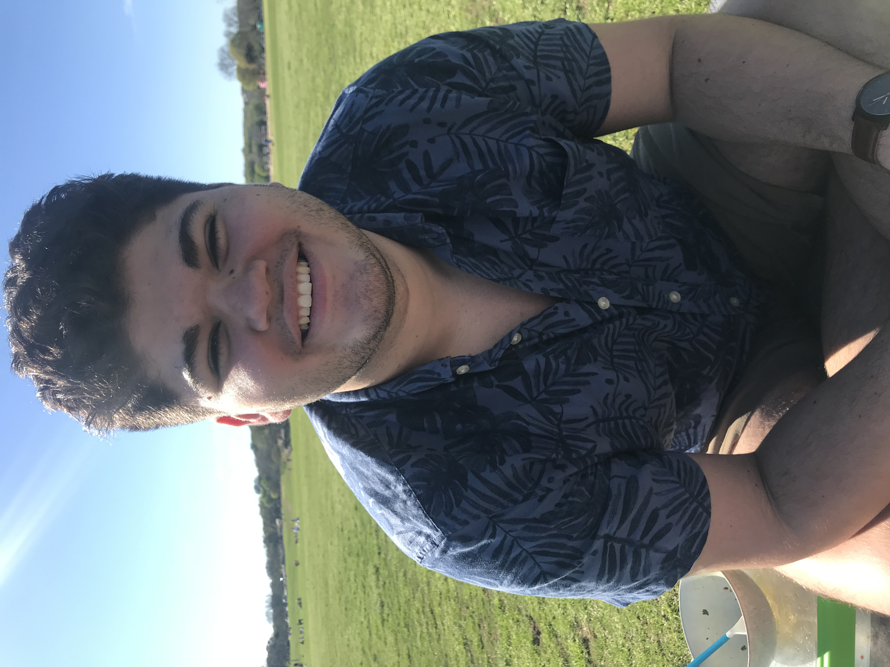

Hello, world! I'm a student at the College of William & Mary with a passion for
technology, connection, and innovation. I love to help others develop an interest in Computer Science
and learn from them, improving my ever-growing technological skill set. My unique experience with
theatre has given me the ability to seek out the human element in technology, and I hope to better
share that element with my various communities, improving them. I also want to use technology to help people, and
have recently discovered a passion for trying to improve not just machine learning algorithms but the data
we use to build them and how we use them.
Basically, I really like Computer Science. I enjoy it in all forms, and I've recently discovered that I enjoy it
particularly in the context of linguistics and natural language processing. I've thus decided to pursue double majors
in Linguistics and Computer Science at William & Mary. But I'm not just into CS and programming! I also:
- Appreciate theatre in all forms, and have played many characters, including Cyrano de Bergerac, The Beast, and most recently, Dr. Joseph Cardin in The Children's Hour
- Know how to play the guitar (mostly acoustic, and I'd really like to get back into it!)
- Love The Transformers, particularly the comic series More Than Meets the Eye . Ask me about it sometime!
- Enjoy creative writing, and have had one of my stories published in William & Mary's "Winged Nation" program!
During my time studying Computer Science at William & Mary, I've also worked on a few research projects. My freshman summer project
was called "Dungeons and Dragons," and involved trying to teach my computer how to play through some simple text-based games that I
wrote. It wasn't advanced or revolutionary by any means, but it did teach my quite a bit about Python's NLTK library and Natural
Language Processing as a whole, along with what research in CS might look like. It actually inspired my sophomore summer research
project, which was "Countering Human Bias in Machine Learning Algorithms Through Natural Language." A real mouthful of a title,
I know, but that really says it all. I worked with Python's keras ML frontend to make some LSTM Neural Networks that generated
news headlines, and researched the ways human bias could play into ML algorithms. You can read about my research experiences in
my blog posts, if you follow the corresponding links below!
I don't just like organizing hackathons; I love to attend hackathons at other schools! Below you will find links
to the projects that I've worked on at hackathons, including a crowdsourced food-rating platform for William & Mary's
dining halls and an Alexa skill that provides a restaurant reccomendation based on your mood. I will be attending
RamHacks 2019 in a few weeks, so when I return, I'll upload the code for that project, too! I guess you could also
consider this website a project, since I had to learn all about HTML/CSS to make it look like this (trust me, you don't
want to see what it looked like before!).